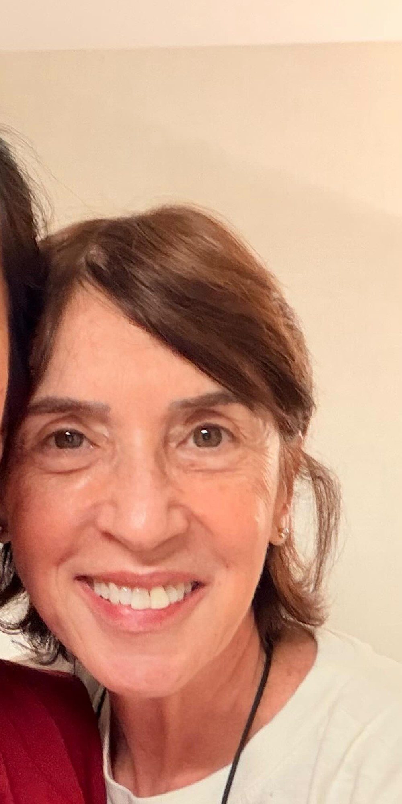

"Uma mulher de mãos mágicas." Mais de duas décadas dedicadas a cuidar de pessoas nos momentos em que o cuidado vale mais do que tudo.

Rosana Ades é massoterapeuta e fundadora da Vitaluz Sala de Cuidar, em São Paulo. Ao longo da carreira, ela se tornou referência em massagem oncológica no Brasil, levando conforto a quem enfrenta o câncer e a quem vive os cuidados paliativos.
Seu trabalho une técnica e sensibilidade. Massagem integrativa, acupuntura, auriculoterapia, cromoterapia e a técnica autoral Silêncio Neural fazem parte de um cuidado que sempre começa pela escuta.
Quem passa por suas mãos descreve a mesma sensação: alívio no corpo e paz no coração. Não é à toa que a Vitaluz carrega nota máxima de quem foi cuidado de perto.
Nenhuma sessão é igual a outra. O cuidado nasce de quem está ali, do jeito que está.
Mais do que músculos, o toque alcança o que sentimos. Acalmar o corpo é acalmar a alma.
Ensinar é multiplicar o cuidado. Por isso forma profissionais e cuidadores Brasil afora.
"Se você chegou até aqui é porque precisa de cuidado. E é exatamente isso que eu ofereço: cuidado de verdade."